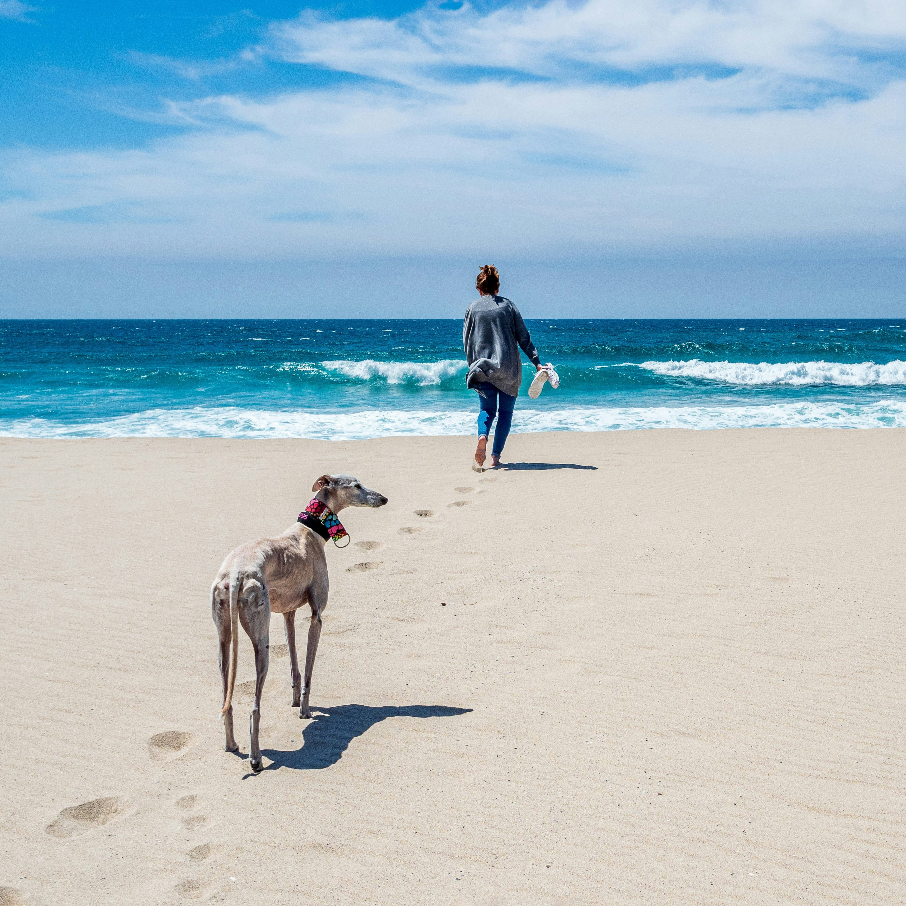
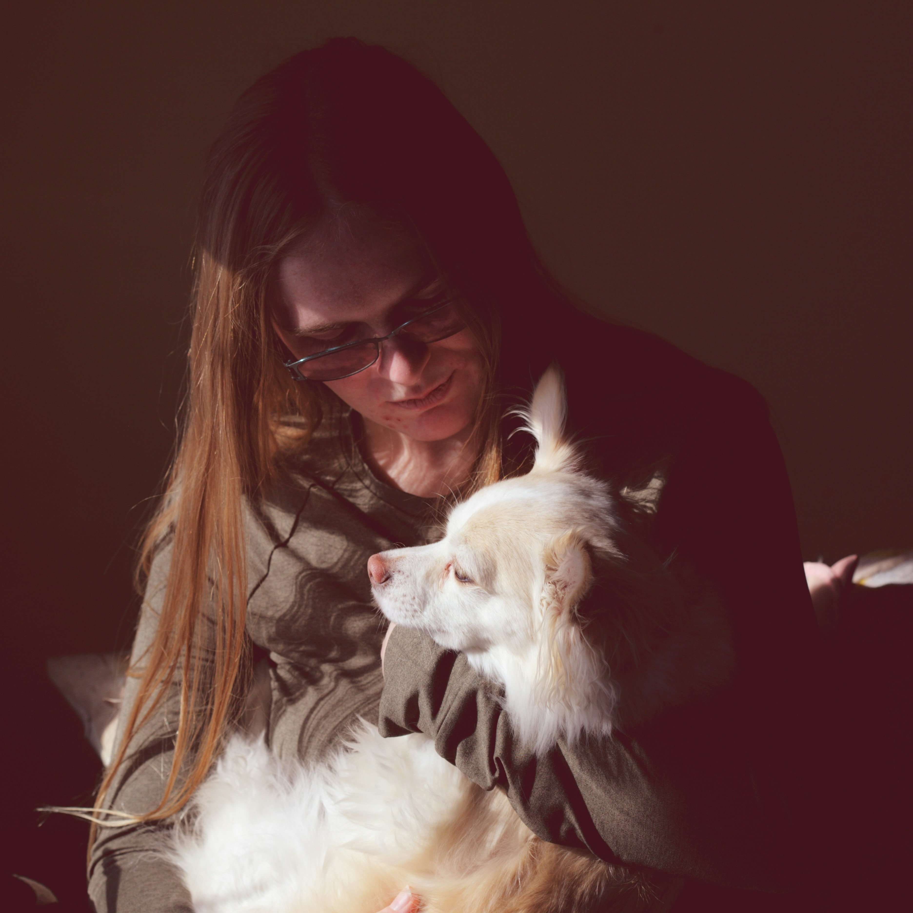
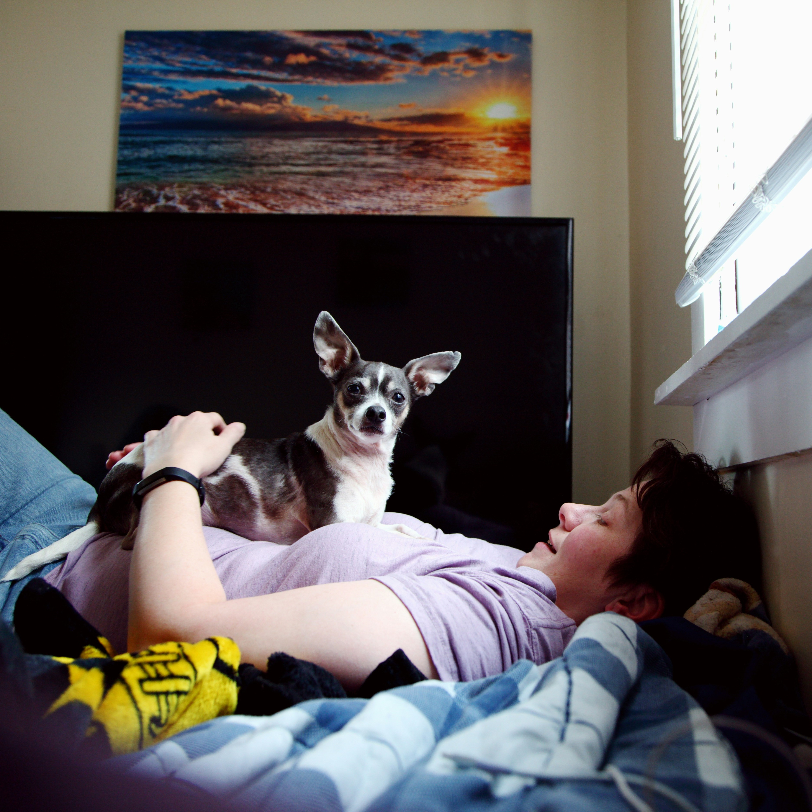
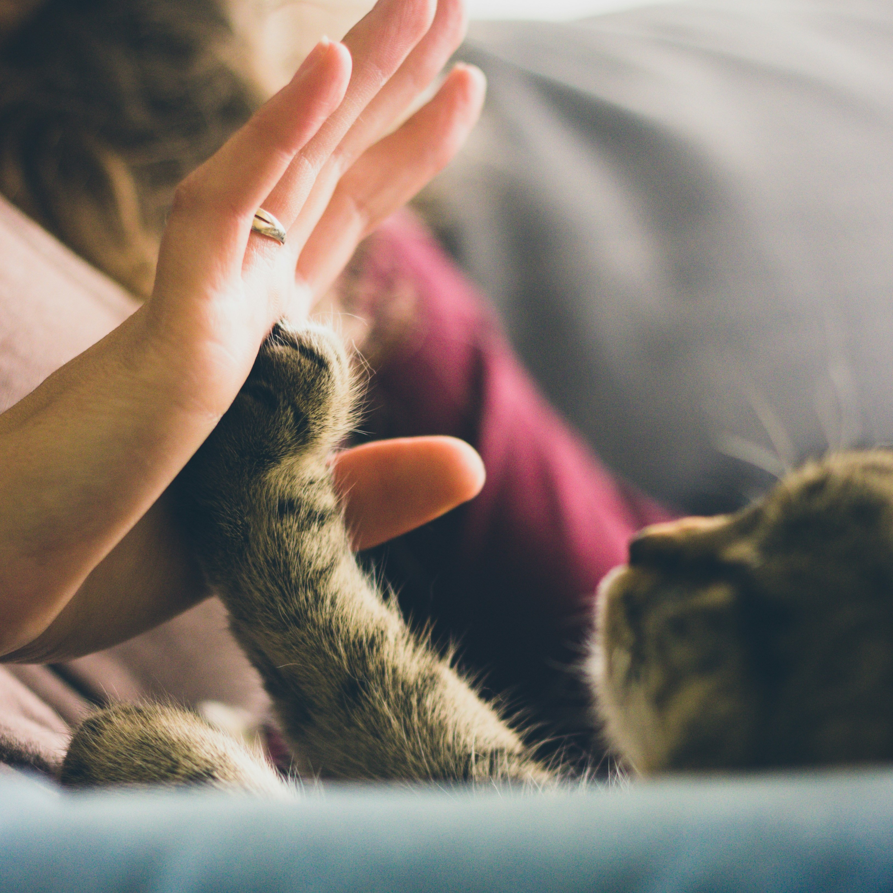

Nuestras historias de éxito
En esta sección "Peludos Felices", cada adoptante comparte su experiencia. Estas conmovedoras narrativas son testimonios del poder transformador del amor. Descubre cómo nuestros peluditos han encontrado hogares amorosos y cómo han cambiado las vidas de quienes las adoptaron, cada historia es única e importante para nosotros. Disfrutá de estos adorables testimonios y unite a nuestra comunidad de Pelitos de amor.
"Adoptar a Magno ha sido una de las mejores decisiones que hemos tomado. Desde el momento en que entró en nuestras vidas, ha llenado nuestro hogar de amor y alegría. Cada día nos sorprende con su lealtad y ternura, recordándonos que la felicidad se encuentra en los momentos más simples. Es inseparable con nuestra hija!"

"Conocí a Luna en el refugio hace unos años. Su mirada triste pero esperanzadora me cautivó al instante. Desde entonces, Luna ha iluminado cada rincón de nuestro hogar con su amor incondicional. Aunque su pasado fue difícil, su futuro está lleno de alegría y aventuras juntos. Luna ha transformado nuestras vidas y estamos agradecidos por cada momento juntos."
"La conexión que hemos formado con Lola es verdaderamente especial. A través de momentos buenos y malos, hemos construido un vínculo inseparable basado en el amor y la confianza mutua. Nuestra Lolita es más que una mascota, es parte de nuestra familia."
"Mi compañero de cuatro patas ha estado a mi lado en cada paso del camino, en los buenos y malos momentos. Su presencia reconfortante me hace sentir segura y amada, los lazos entre humanos y perros son verdaderamente especiales. Muffin es todo para mi."
"Bingo, nuestro intrépido compañero, vive para las aventuras al aire libre. Desde largas caminatas por el bosque hasta emocionantes juegos de búsqueda, Rocky nunca se cansa de explorar el mundo que lo rodea. Es el mejor compañero para nuestra hija."

"Simón, nuestro gato perezoso, es el rey de las siestas. No importa el lugar, desde una cama hasta un rincón soleado, Simón siempre encuentra la manera de acomodarse para una larga siesta. Su habilidad para encontrar el lugar más cómodo es realmente impresionante."
